Fare computation follows base fare plus per-distance excess rules.
Built for TODA Operations • Kidapawan City
Modern Digital Fare for Tricycle Operations.
GPS-powered fare computation, trip recovery, custom rides, applicant onboarding, and admin analytics in one seamless platform.
GPS TrackingTrip RecoveryPDF / CSV Reports
Driver Workflow
Start, track, and save trips.
A clean fare meter interface for passenger handling, GPS tracking, and trip recording.
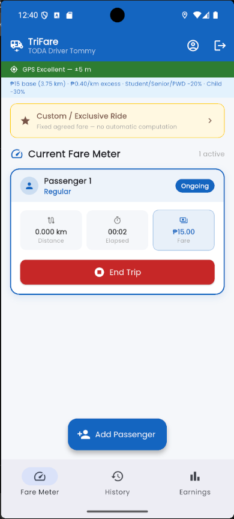
Product Experience
One app. Three complete workflows.
Scroll through the actual TriFare experience captured from the Flutter application.
01
Secure sign-in
Drivers, admins, and applicants access their own role-based interface.
02
Add passenger
Select passenger category, quantity, and discounts before starting.
03
Track and compute
GPS distance, elapsed time, and fare update during the trip.
04
Save receipt
Completed trips are recorded for history, earnings, and reports.
05
Monitor operations
Admins view revenue, drivers, applications, analytics, and reports.
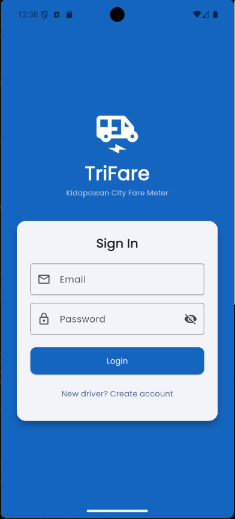
For Drivers
Every trip starts with one tap.
TriFare keeps the driver workflow simple from passenger selection to trip receipt.
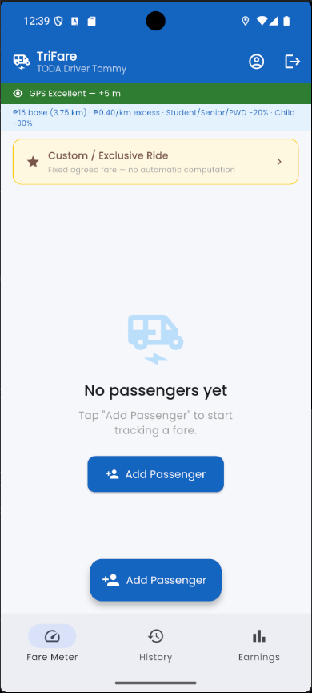
Fare Meter
Monitor GPS status and prepare passenger trips.
Passenger Types
Built-in fare categories and discount labels.
Live Trip
Track distance, time, and current fare in real time.
Recovery System
Trips continue even after interruptions.
TriFare restores ongoing metered trips and custom rides after app restarts, helping drivers avoid losing trip progress during pilot testing.
App closes→Recover trip→End safely
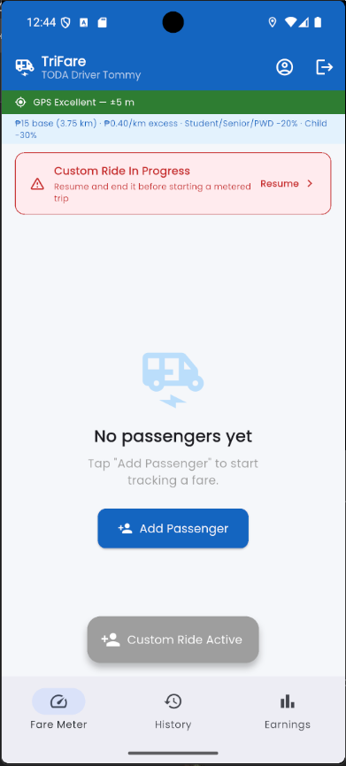
Custom / Exclusive Ride
Negotiated fares without automatic computation.
Drivers can set an agreed fare for exclusive rides while still recording distance, duration, and trip history.
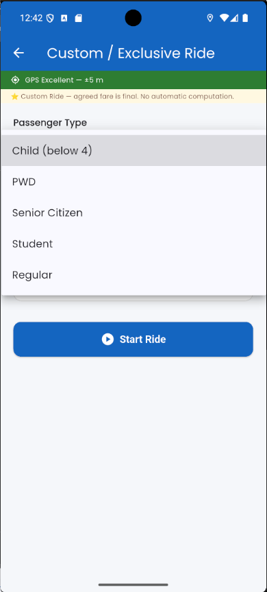
Set Agreed Fare
Enter passenger type, fare, and optional destination.
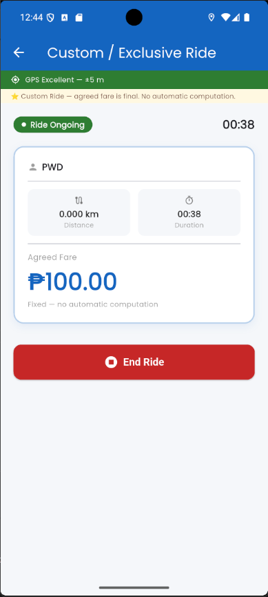
End Custom Ride
Save the exact negotiated amount after the ride.
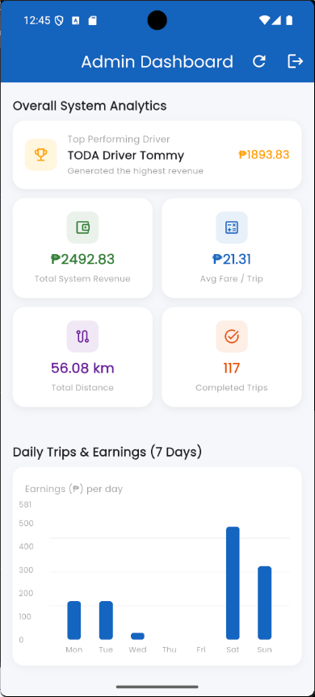
117+Completed Trips
₱2,492Revenue Recorded
For Admins
Operations visibility in one dashboard.
Monitor driver performance, daily revenue, passenger breakdown, applications, and exportable reports.
- Driver statistics and detail views
- Applicant review and approval
- CSV and PDF report exports
- Daily trip and revenue analytics
For Applicants
Driver onboarding made simple.
Applicants can register, submit details, upload documents, and track review status.
1Register
Create applicant account.
2Apply
Fill out driver information.
3Upload
Submit documents.
4Track
Wait for admin review.
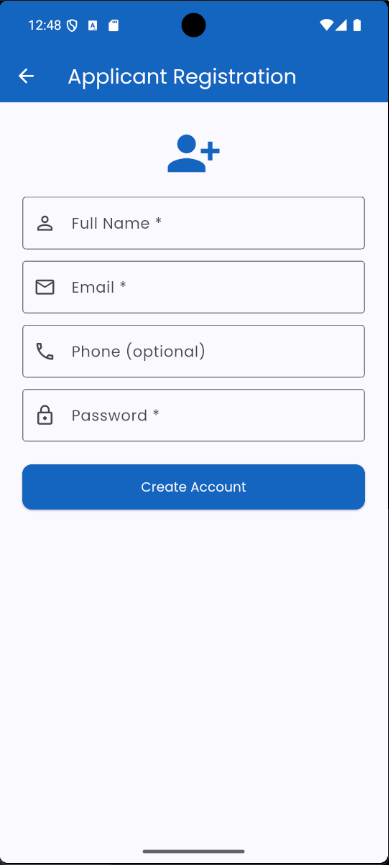
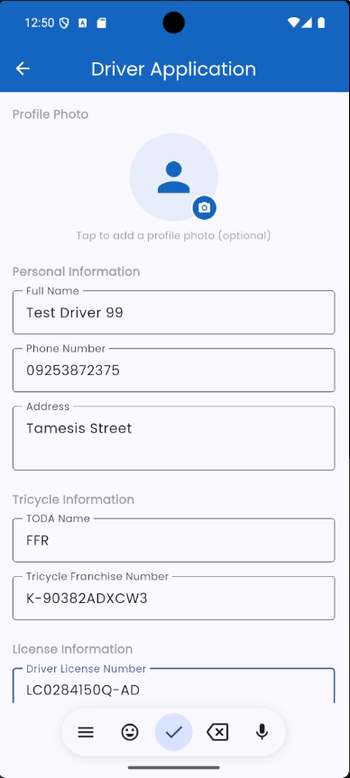
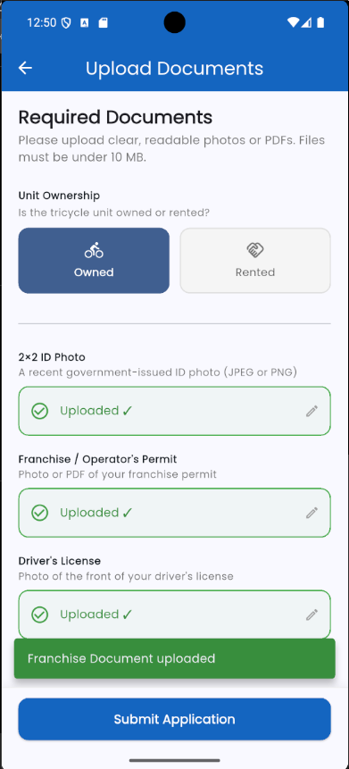
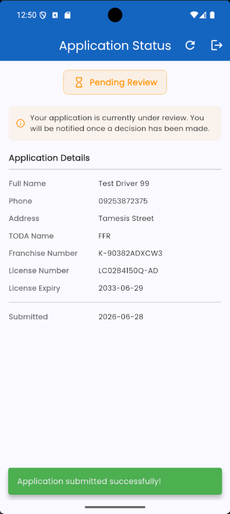
Real App Screens
Explore TriFare by role.
Switch between driver, admin, applicant, and custom ride screens.
Interactive Fare Calculator
Try the TriFare formula.
Base fare is ₱15.00 for the first 3.75 km. Excess distance is ₱0.40 per 100 meters, equal to ₱4.00 per kilometer.
Estimated Fare
₱20.00
- Base Fare
- ₱15.00
- Excess Distance
- 1.25 km
- Excess Fare
- ₱5.00
- Discount
- ₱0.00
Pilot Testing
TriFare in numbers.
Sample values from the current testing dashboard.
Capstone Showcase
Ready to make every trip transparent?
TriFare was built as a BSIT capstone system for digital fare computation and operations monitoring.